plot2() creates a complete ggplot2 plot
from a single function call. You describe what you want to see, and
plot2() determines how to draw it: it chooses the plot
type, summarises the data, sorts, sets colours, axes and data labels,
and applies a clean theme. The result is an ordinary ggplot
object, so everything that ggplot2 offers remains available
afterwards.
This vignette introduces the main ideas. It uses the
admitted_patients data set that comes with the package, a
fictitious set of 250 hospital admissions, and some data sets from base
R.
library(plot2)
admitted_patients
#> # A tibble: 250 × 7
#> date patient_id gender age age_group hospital ward
#> <date> <dbl> <chr> <dbl> <ord> <fct> <chr>
#> 1 2002-01-14 1 M 78 75+ D Non-ICU
#> 2 2002-03-17 2 M 78 75+ C Non-ICU
#> 3 2002-04-08 3 M 78 75+ A ICU
#> 4 2002-04-14 4 M 72 55-74 C Non-ICU
#> 5 2002-05-07 5 M 83 75+ C Non-ICU
#> 6 2002-05-16 6 F 65 55-74 B ICU
#> 7 2002-05-16 7 M 47 25-54 D Non-ICU
#> 8 2002-06-18 8 M 30 25-54 B ICU
#> 9 2002-06-23 9 M 82 75+ D Non-ICU
#> 10 2002-06-23 9 M 82 75+ D Non-ICU
#> # ℹ 240 more rowsFour directions
Every plot is described by up to four plotting directions, which are
also the first four arguments of plot2():
-
x: the values along the x axis; -
y: the values along the y axis; -
category: the groups within the plot, shown as colours (inggplot2this is thecolourorfillaesthetic, depending on the geom); -
facet: the groups shown in separate panels.
Columns are given without quotes, as in dplyr:
admitted_patients |>
plot2(x = hospital, y = age, category = gender, facet = ward)
#> Using type = "boxplot" since all groups in hospital and gender and ward contain at least three values
#> Assuming facet.fixed_y = TRUE since the two y scales differ by less than 25%
#> Assuming facet.repeat_labels_y = FALSE since y has fixed scales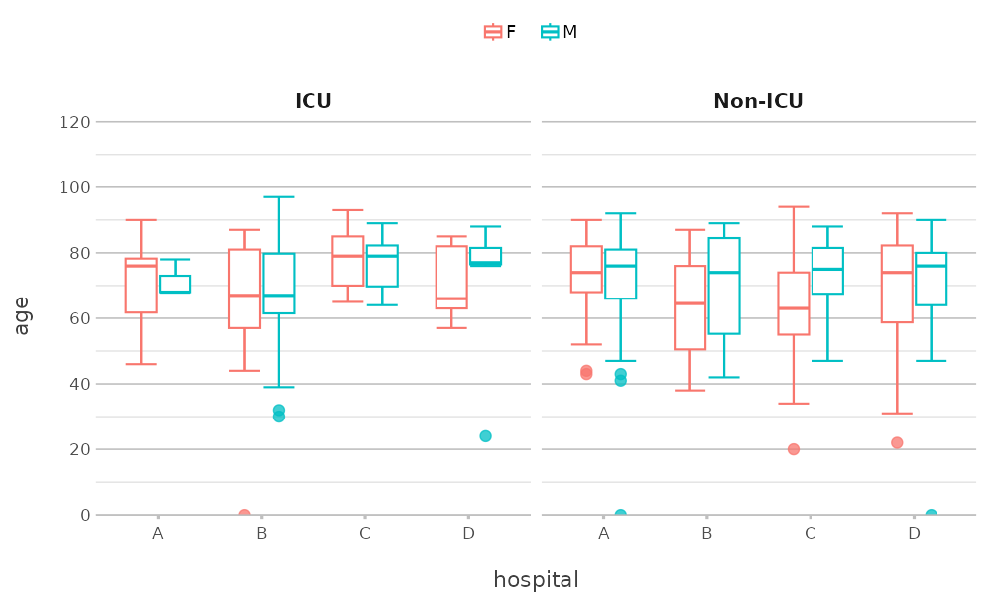
Since these are the first four arguments, the names can be left out. The following call gives the same plot:
admitted_patients |>
plot2(hospital, age, gender, ward)plot2() fills in what is not given. The
iris data have four numeric columns and a factor, so a call
without any directions plots the first two numeric columns as points,
coloured by the factor:
iris |>
plot2()
#> Using x = Sepal.Length
#> Using y = Sepal.Width
#> Using category = Species
#> Using type = "point" since both axes are numeric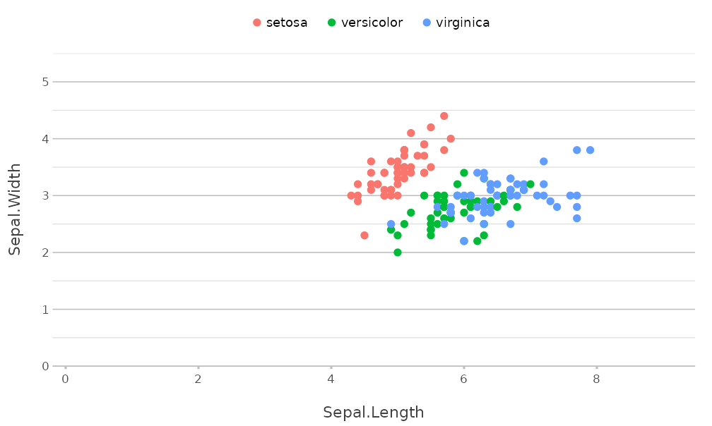
Each automatic decision follows a fixed rule. In an interactive
session, plot2() reports these decisions in a message, such
as Using category = Species; set
options(plot2.silent = TRUE) to hide them. Any decision is
overridden by setting the argument concerned. The section Automatic
choices in ?plot2 lists all rules.
Calculations in arguments
The directions accept calculations on the columns of the data. For
y, this means that the data are summarised per group,
without a separate group_by() and summarise()
step:
admitted_patients |>
plot2(x = hospital, y = n_distinct(patient_id))Every value of x is now one bar, so plot2()
chose a column plot and added data labels. Use y = n() to
count rows, or any other function that returns a single value per group,
such as mean(), median() or
max().
The other directions accept calculations too:
admitted_patients |>
plot2(x = format(date, "%Y"),
y = median(age),
category = ifelse(ward == "ICU", "Intensive care", "Other wards"),
type = "line")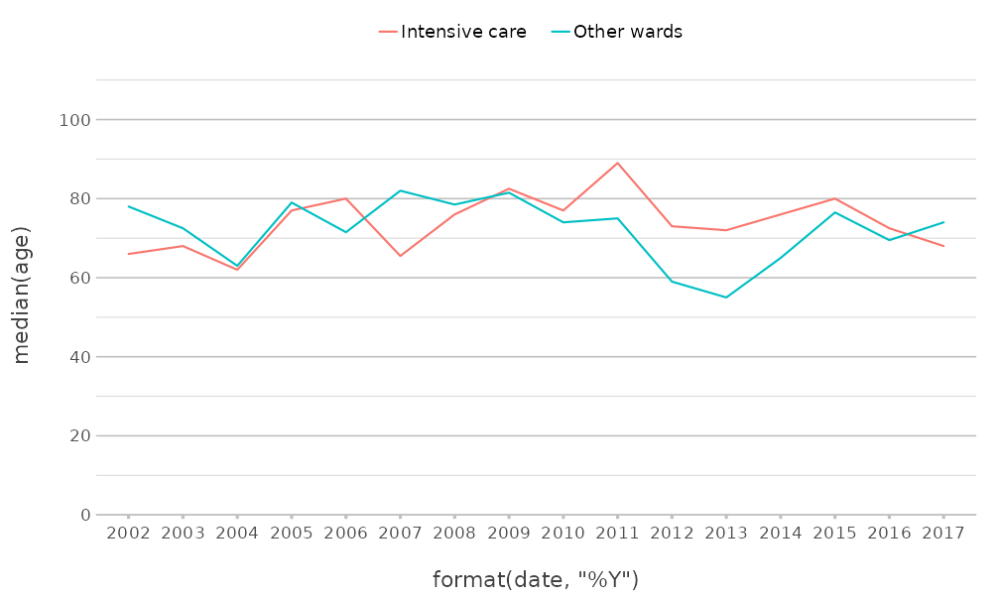
n() and n_distinct() are re-exported from
dplyr, together with the tidyselect helpers
such as where() and starts_with(), so they
work without loading other packages. A helper can select several columns
for y, which are then shown as a category:
iris |>
plot2(x = Species, y = where(is.double))
#> Using y = c(Petal.Length, Petal.Width, Sepal.Length, Sepal.Width)
#> Using type = "boxplot" since all groups in Species and category contain at least three values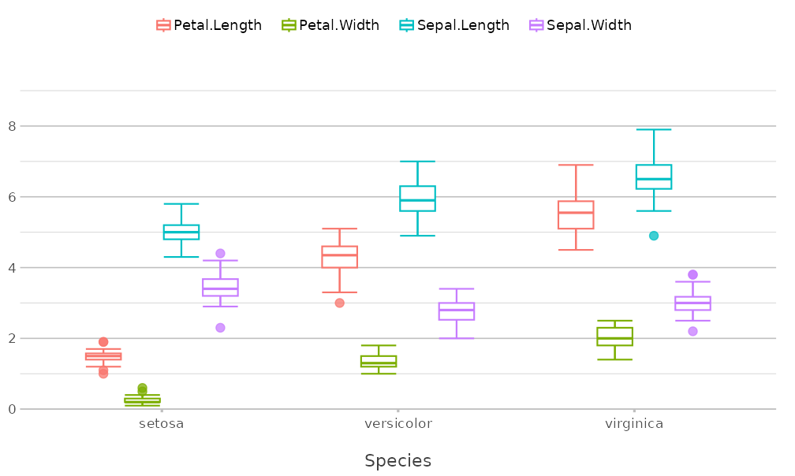
Titles accept calculations as well, which keeps them correct when the
data change. glue::glue() also works here:
admitted_patients |>
plot2(x = age,
type = "histogram",
title = paste("Age of", n_distinct(patient_id), "patients"),
subtitle = paste("Based on", n(), "admissions"),
caption = paste("Admitted between", min(format(date, "%Y")), "and", max(format(date, "%Y"))))
#> Using binwidth = 6.4 based on data
#> Assuming smooth = TRUE for type = "histogram"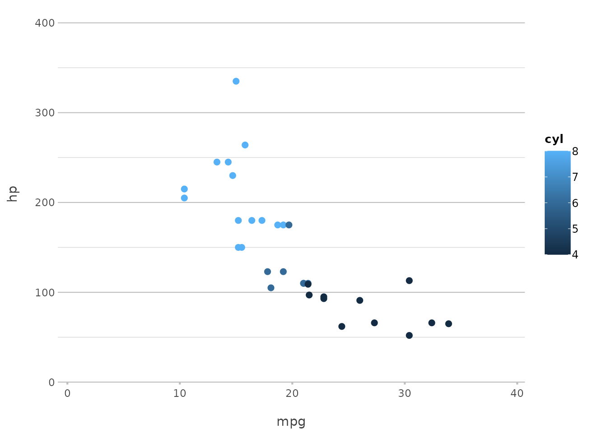
Plot types
Without a type, plot2() chooses one from
the data: a boxplot if every group contains at least three values,
points if both axes are numeric, and columns otherwise. The
type argument sets it explicitly. It accepts the name of
any ggplot2 geom, with or without the geom_
prefix, and abbreviations such as "l" for lines and
"b" for boxplots:
admitted_patients |>
plot2(x = hospital, y = age, type = "violin")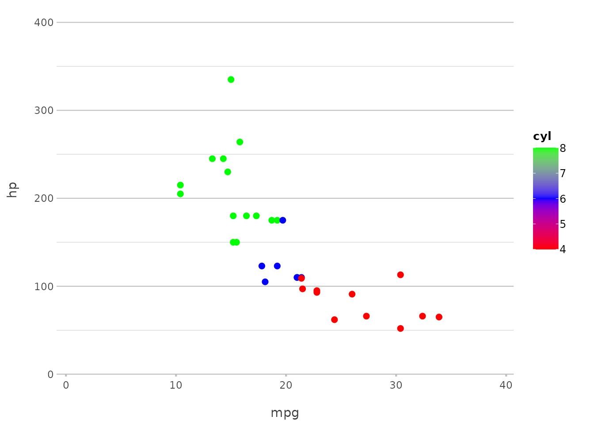
plot2() also adds types that ggplot2 does
not provide directly, such as dumbbell, back-to-back, Sankey, spider and
UpSet plots. A dumbbell plot compares two groups:
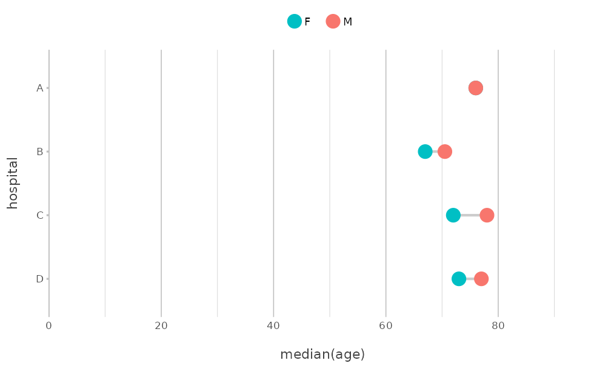
vignette("supported_types", package = "plot2") shows
every type with its data requirements.
Sorting and limiting
Each direction can be sorted with one argument: x.sort,
category.sort and facet.sort. They accept
TRUE (alphabetical, with numbers in their numeric order),
"freq-desc" and "freq-asc" (by the values of
y), FALSE (in the order of the data), or a
vector with the desired order:
mtcars |>
plot2(x = carb, y = n(), x.sort = "freq-desc")
#> Using x.character = TRUE since x.sort is set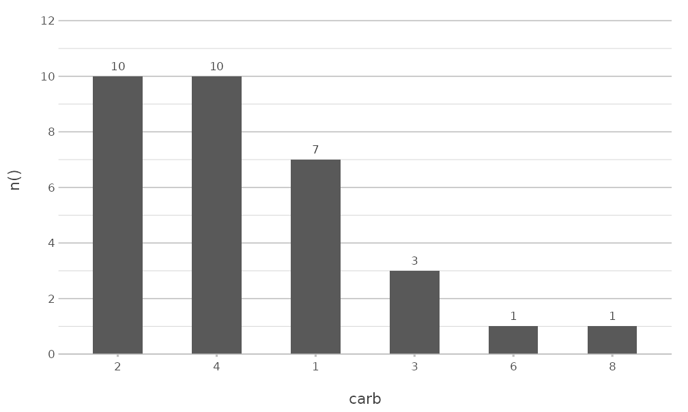
A vector does not need to contain all values; the remaining values follow in their usual order:
admitted_patients |>
plot2(x = hospital,
y = n(),
category = gender,
x.sort = c("D", "B"),
category.sort = "alpha-desc")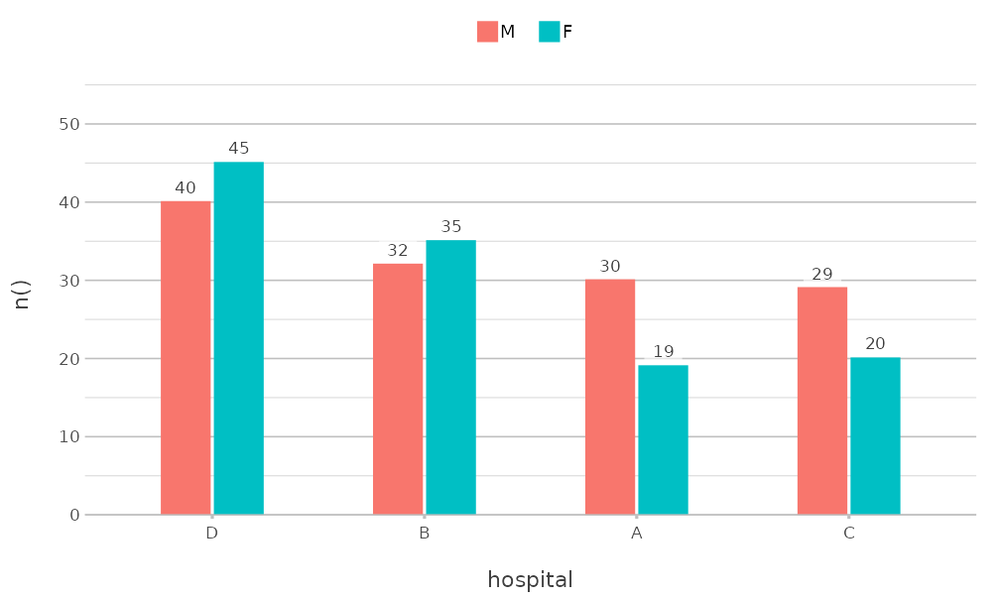
x.max_items, category.max_items and
facet.max_items limit the number of values shown. The
values beyond the limit are combined into one item, which is placed
last:
mtcars |>
plot2(x = carb, y = n(), x.sort = "freq-desc", x.max_items = 4)
#> Using x.character = TRUE since x.sort is set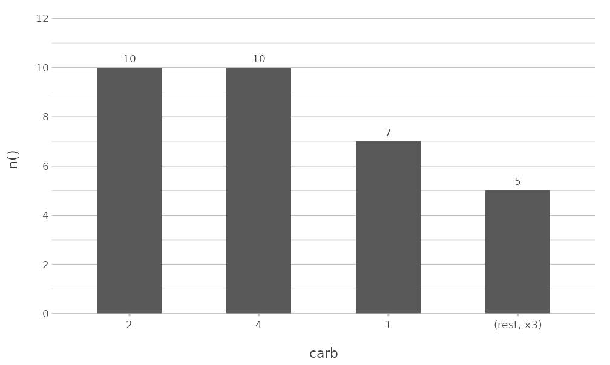
Stacking
Columns of different categories are placed next to each other.
stacked = TRUE stacks them, and
stacked_fill = TRUE stacks them to 100%:
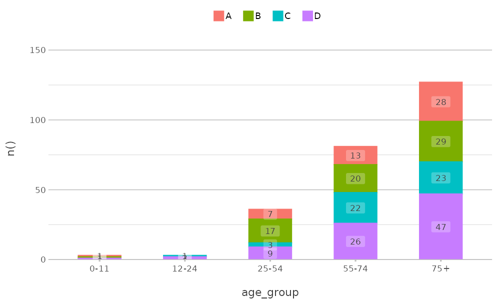
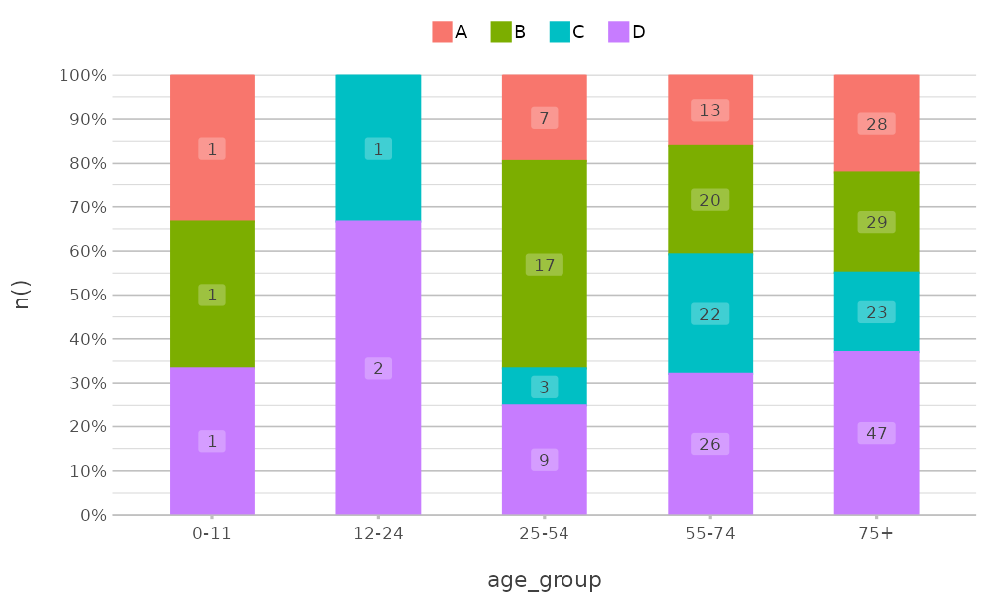
Axes and data labels
All settings of a direction share its name as a prefix, such as
x.title, y.limits or
category.title. The y axis starts at zero where possible;
y.zoom = TRUE (or zoom = TRUE for both axes)
limits it to the range of the data. horizontal = TRUE turns
the plot, and a type = "bar" gives horizontal columns:
admitted_patients |>
plot2(x = age_group,
y = n(),
category = gender,
type = "bar",
x.title = "Age group",
y.title = "Number of admissions",
category.title = "Gender")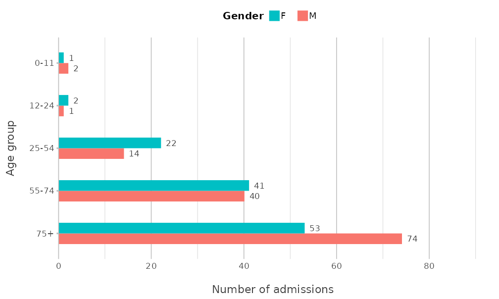
Axis values can be formatted with functions, such as
y.percent = TRUE for percentages or y.labels
for any labelling function. A secondary y axis is set with
y_secondary. This example uses the economics
data set from ggplot2:
ggplot2::economics |>
plot2(x = date,
y = unemploy / 1000,
y_secondary = psavert,
type = "line",
colour = "#4E79A7",
y_secondary.colour = "#F28E2B",
x.title = NULL,
y.title = "Unemployed (millions)",
y_secondary.title = "Personal savings rate (%)")
#> Using x.date_breaks = "5 years" based on data
#> Using x.date_labels = "yyyy" based on data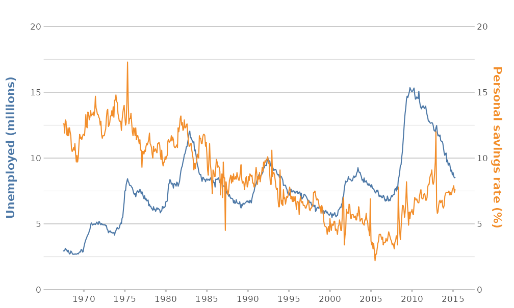
Data labels are added automatically to column plots with at most 25
values. datalabels = TRUE always shows them,
datalabels = FALSE hides them, and
datalabels.format sets their text. In this format,
%n is the value and %p its percentage:
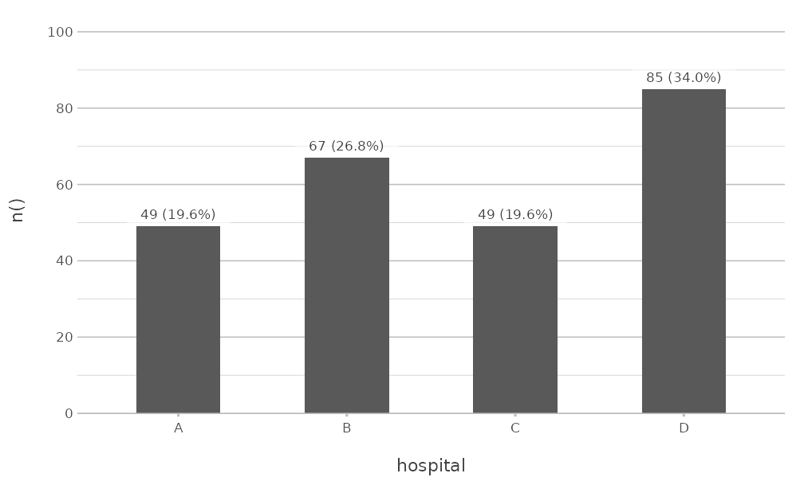
Colours
colour sets the colours for every plot type. In
ggplot2, this requires either the colour or
the fill aesthetic with its matching scale function,
depending on the geom. colour accepts colour names,
hexadecimal codes, palette names such as "viridis", and
named vectors that match the values of category:
admitted_patients |>
plot2(x = hospital,
y = n(),
category = gender,
colour = c(F = "#4E79A7", M = "#F28E2B"))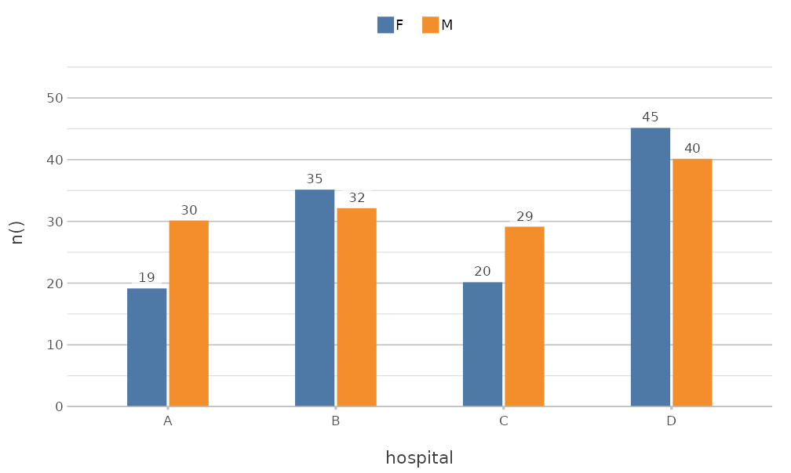
category.focus highlights one value and shows the others
in grey:
admitted_patients |>
plot2(x = format(date, "%Y"),
y = n(),
category = hospital,
category.focus = "B",
type = "line")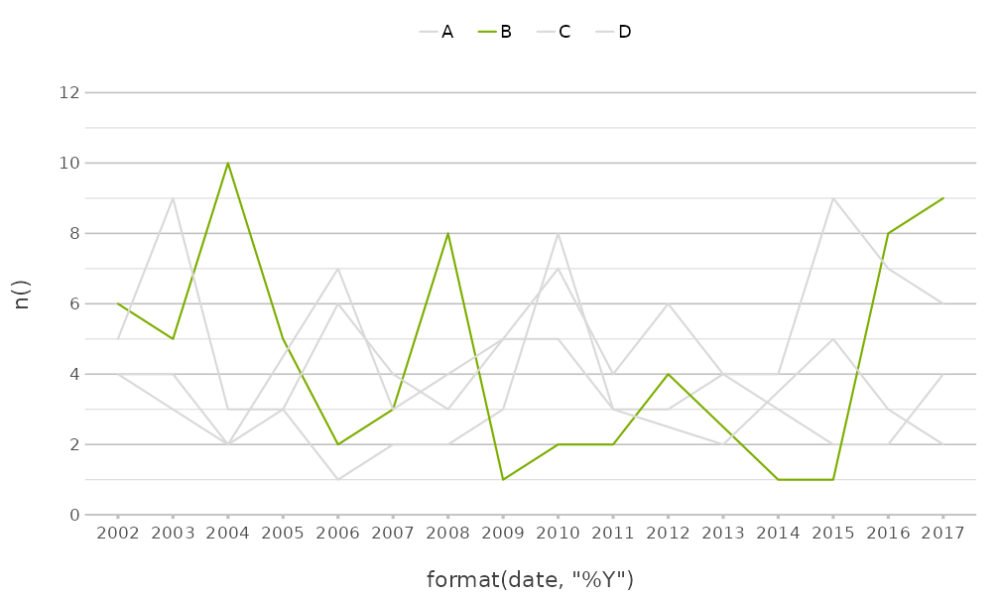
The article Colours and themes on the package website describes palettes, custom organisation colours and themes in more detail.
Adding layers
The add_*() functions add a layer to an existing plot.
They use the data of the plot unless other data are given, and they take
the category of the plot into account:
p <- mtcars |>
plot2(x = mpg, y = hp, category = factor(cyl), category.title = "Cylinders")
#> Using type = "point" since both axes are numeric
p |>
add_line(y = mean(hp), legend.value = "Mean per group")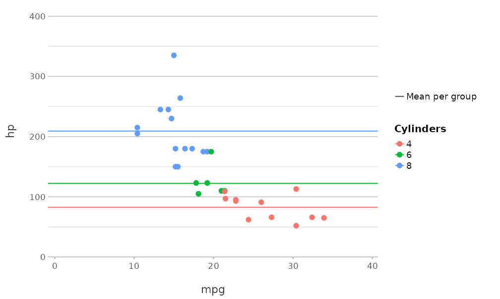
add_line(), add_point(),
add_col(), add_errorbar() and
add_smooth() cover the most common layers, and
add_type() adds any other geom. A smooth can also be set
directly with the smooth argument of
plot2():
mtcars |>
plot2(x = mpg, y = hp, smooth = TRUE, smooth.method = "lm")
#> Using type = "point" since both axes are numeric
#> `geom_smooth()` using formula = 'y ~ x'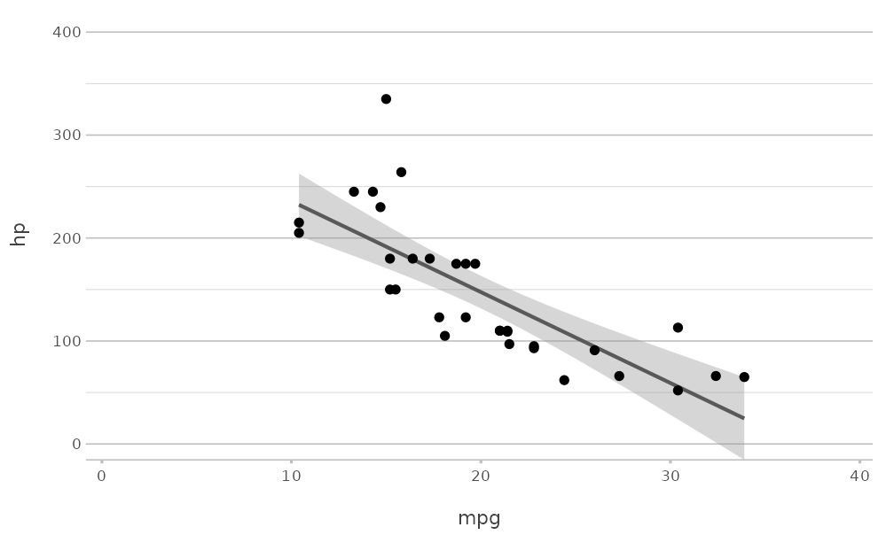
Other kinds of input
plot2() is an S3 generic. Besides data frames, it plots
vectors, tables, formulas, matrices, and models and other objects that
ggplot2::fortify() or broom::augment() convert
to a data frame. A formula has the form
y ~ x + category | facet:
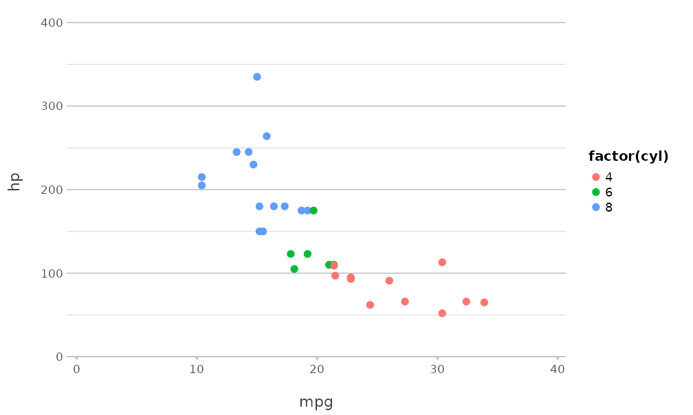
A correlation matrix becomes a heatmap:
mtcars |>
cor() |>
plot2(colour = c("#2166AC", "white", "#B2182B"),
datalabels = TRUE,
category.title = "Correlation")
#> Assuming type = "tile" since the matrix contains identical row and column names
#> Using category.midpoint = 0 (the current category scale centre)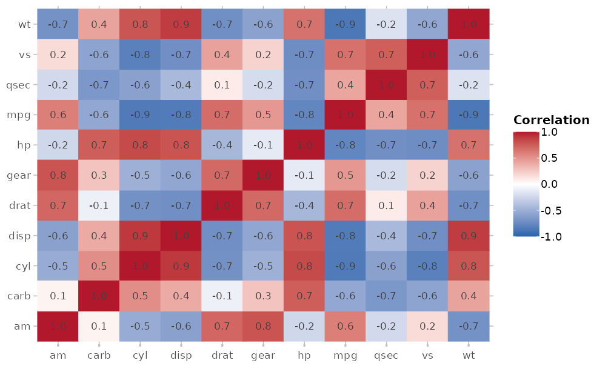
A model is converted with broom::augment(), which adds
columns such as the fitted values (.fitted) and the
residuals (.resid) to the data of the model. This gives a
residual plot:
lm(hp ~ mpg, data = mtcars) |>
plot2(x = .fitted, y = .resid, x.title = "Fitted values", y.title = "Residuals")
#> Using type = "point" since both axes are numeric
Geographic data of class sf become maps; the article
Maps on the package website describes them.
?plot2-methods lists all methods.
Continuing with ggplot2
The result of plot2() is a ggplot object.
Any ggplot2 layer, scale, coordinate system or theme
element can be added with +:
admitted_patients |>
plot2(x = hospital, y = mean(age), y.title = "Mean age", datalabels = FALSE) +
ggplot2::geom_hline(yintercept = mean(admitted_patients$age), linetype = "dashed")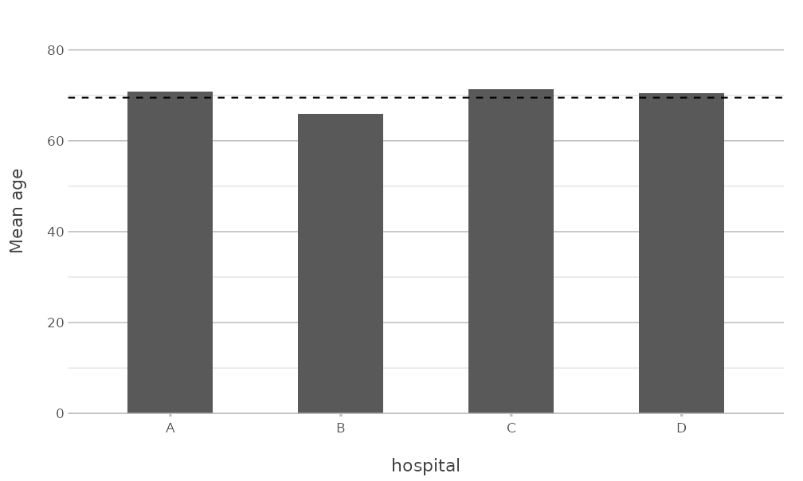
By default, plot2() uses theme_minimal2(),
a variant of ggplot2::theme_minimal() with fewer lines and
more white space. The theme argument sets another theme,
and theme = NULL uses the default ggplot2
theme.
Settings for all plots
Package options set defaults for all plots in a session, such as the
colours (plot2.colour), the font (plot2.font),
the theme (plot2.theme) and the decimal mark
(plot2.decimal.mark). Set them with options(),
for example in an .Rprofile file:
options(plot2.colour = "viridis",
plot2.decimal.mark = ",")?plot2-options lists all options.
Learning more
-
vignette("supported_types", package = "plot2")shows all plot types. -
?plot2documents every argument. Its section Automatic choices describes how missing arguments are determined. - The package website, https://msberends.github.io/plot2/, has articles on
colours and themes, fonts and maps, and on
plot2()for users ofggplot2. -
create_interactively()opens a Shiny app that builds aplot2()call from a point-and-click interface and shows the resulting code.